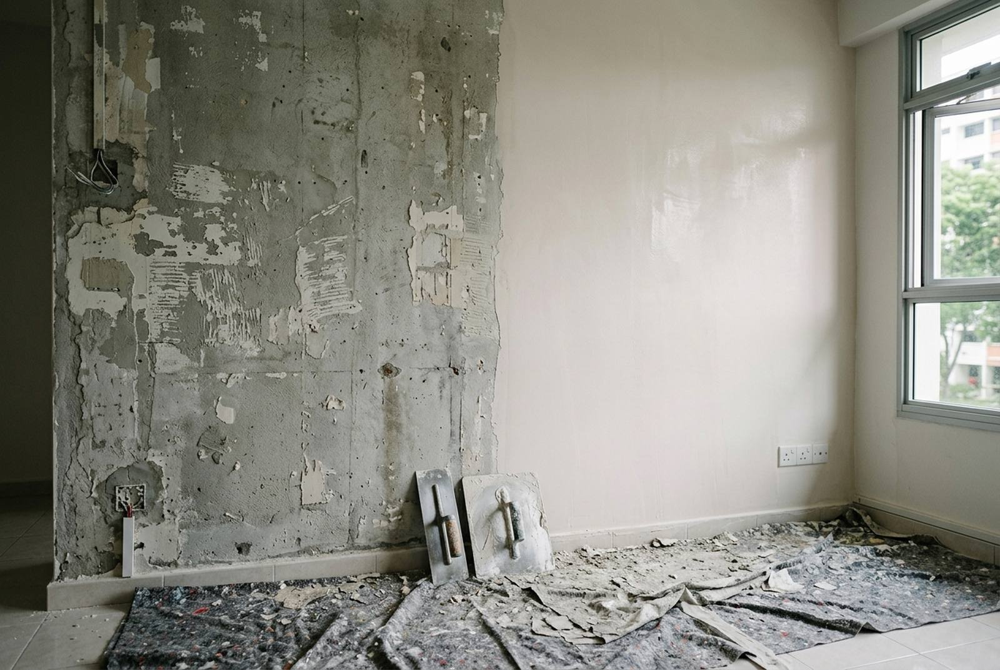

Peeling paint and failing walls: repaint, skim or replaster?

Paint peeling off a wall is a symptom, and the mistake that costs the most money is treating it as the problem. Repainting a flat costs roughly S$650 to S$1,400. Stripping back a failed wall finish, replastering it properly and then painting costs several times that: a real August 2026 job of ours came to S$6,550. The gap between those two numbers is why it is worth spending ten minutes reading the wall before you call anyone.
Read the wall first
How the finish is failing tells you what has gone wrong underneath. Five patterns cover almost everything we see in Singapore flats.
Peeling and flaking in sheets
The paint lifts as a film and separates cleanly from what is beneath, often coming away in strips when you pick at an edge. This is adhesion failure, and the layers below are usually sound. Cause: something was painted over that the paint could not grip. A chalky old surface, a glossy or oil-based finish underneath a water-based emulsion, dust, or new plaster that never got a sealer.
Fix level: repaint, with proper preparation. Scrape back to a sound edge, sand, seal, recoat.
Blistering and bubbling
Domed bubbles under the paint film. Break one open. If the plaster inside is dry and powdery, it is trapped air or solvent from painting over a warm or dusty surface, and it is cosmetic. If it is damp inside, or the wall around it is cool and dark, water is coming from behind the paint. That is not a painting job at all until the water is dealt with.
Chalking
Run a finger down the wall and it comes away white and powdery. The binder in the paint has broken down, usually from age or a low-grade product. It is not dangerous, but nothing will stick to it. Fix level: wash down, seal, repaint. Painting straight onto a chalky wall produces the peeling in the first pattern, about a year later.
Cracking
Fine, random, map-like cracking in the surface is normally in the skim coat and is cosmetic. A single straight crack that reappears in the same place after every repair is movement, and filler will simply crack again. Cracks that follow a line along a wall or around a doorway are worth investigating rather than filling.
Hollow, drummy plaster
This is the one that changes the price. Tap along the wall with a knuckle or the handle of a screwdriver. Sound plaster sounds solid and dull. A hollow, drummy note means the plaster has lost its bond with the substrate behind it and is effectively floating. It may look perfectly fine and still be a few years from coming off in a slab.
Painting a drummy wall is throwing money away. It has to come off. This is the failure mode behind the S$6,550 job below, and the tap test costs nothing, so do it before you accept any quote.
Where it comes from in a Singapore flat
- A wet area on the other side. The most common cause we find. A bedroom wall that backs onto a bathroom, or a wall beside a kitchen sink, failing because the waterproofing or the tile grout on the wet side has let go. The paint is failing where the water arrives, which is not where the leak is.
- A leak from the unit above. Ceiling and upper-wall staining that spreads slowly. Between HDB households this has an established process, and HDB publishes guidance on inter-floor ceiling leaks and how the two parties handle it. Do not repaint until it is resolved.
- External wall and driving rain. Older blocks, west-facing walls, and any wall where the external render or sealant has weathered.
- Condensation with no airflow. Behind a wardrobe pushed flat against an external wall, or in a room that is air-conditioned nightly and shut up all day. Mould speckling usually comes with it.
- A sweating pipe in a chase. Under-insulated aircon refrigerant piping in a wall chase condenses and wets the plaster from inside. The give-away is a damp stripe rather than a patch.
- A previous cheap repaint. Two coats rolled over a chalky, unsealed or drummy wall to sell a flat. Very common in resale units, and it usually surfaces within the first two years.
The rule that follows from all of this: if the wall is wet, find the water first. Every dollar spent on plaster and paint over an unresolved leak is spent twice.
Three levels of fix, and what each costs
Whole flat, supply of labour and materials.
| Level | What it covers | Indicative cost (SGD) |
|---|---|---|
| 1. Repaint | Wash down, fill minor holes and hairline cracks, sealer where needed, two coats | $650 – $1,400 depending on flat size |
| 2. Patch, skim and repaint | Localised scrape-back and skim to failing areas, then a full repaint | $1,500 – $3,000 |
| 3. Full replaster and repaint | Scrape off the existing finish, chemical bonding coat, hard-finish plaster and skim, sealer, two coats | $4,500 – $7,500 |
| Plastering only, whole flat | No painting; walls handed over ready to receive paint | ≈ $3,900 on a completed RK E&C project |
| Skim coat, per room | Existing plaster sound, surface tired | $250 – $600 |
| Crack or patch repair, localised | Post-hacking touch-up, feature wall patch | $100 – $300 |
Level 1 against level 3 is roughly a five-fold difference, and the whole art of not wasting money here is being honest about which one the wall needs. Our separate guides on painting an HDB flat and wall plastering and skim coat costs break each of those down on its own.
A real 2026 invoice: S$6,550
August 2026, a flat at Choa Chu Kang Avenue 2. The existing wall finish had failed and could not be painted over. We invoiced the plastering and painting as one job, and this is the scope exactly as it was billed.
Plastering. Scrape off the existing wall finish at the affected areas. Apply a chemical bonding coat to the prepared substrate. Lay hard-finish plaster and skim to a smooth, even surface ready to receive paint.
Painting. Apply one coat of oil-based sealer to all prepared surfaces. Finish in Nippon Paint, two coats, in up to three colours as selected by the owner.
Total payable: S$6,550.
Now compare that with the numbers in the table. A full-house plastering job on a separate project came in at about S$3,900, and a whole-flat repaint runs S$650 to S$1,400. Add those together and you get roughly S$5,000, not S$6,550.
The difference is the two words at the front of the scope: scrape off. Stripping a failed finish back to a sound substrate is slow, filthy, entirely manual work, and it is the line that separates a plastering job from a remediation job. It also has to happen before anyone can price the rest accurately, because you do not know how much is coming off until it starts coming off.
Which is the practical warning: be sceptical of a fixed price for stripping back a wall that nobody has opened up. A contractor who quotes level 3 work from photographs is either padding the number heavily or is going to come back to you mid-job.
The bonding coat, and why skipping it costs you twice
The single line in that invoice that most owners would not think to ask about is "apply chemical bonding coat to the prepared substrate". It is also the line a cheaper quote will quietly omit.
Fresh plaster needs something to grip. On a wall that has just been stripped, what is left is old, dense, dusty and often partly sealed by decades of paint, which is close to the worst surface plaster can be asked to stick to. A bonding agent, brushed or rolled on before plastering, gives the new coat a key it would not otherwise have.
Leave it out and the plaster will go on fine, look perfect, and pass any inspection you can do on handover day. Then it releases: hollow patches within a year or two, and eventually the exact drummy wall you paid to get rid of. You cannot see whether it was used once the plaster is on. Ask for it on the quote, in writing, before work starts.
The same logic applies to letting it cure. New plaster carries a lot of water and is strongly alkaline while it dries. Painting too early traps the moisture and can attack the paint film from behind, producing patchy sheen or early peeling. This is the most commonly rushed step in Singapore renovation, because it is dead time on a programme with a handover date. Build it into the schedule rather than compressing it, and see our plastering guide for how long to allow.
Sealer, coats and colours
The painting half of that invoice is also worth reading closely, because every element is doing a job.
- One coat of oil-based sealer. On fresh plaster this is not optional. It evens out a very porous surface so the topcoat does not sink in unevenly, and it holds back the alkalinity of the new plaster. Skip it and you get a patchy sheen and a finish that lifts.
- Two coats of topcoat. One coat over sealer looks passably good on the day and thin within a year, particularly on a colour change. Two is the standard, and it is what makes a wall washable.
- Up to three colours. Worth understanding as a cost item: every extra colour means more cutting-in at the junctions and another set of tins. Paint is bought whole, so a colour used on one feature wall may waste most of a tin. Three colours across a flat is a sensible ceiling, and it is where we tend to cap it as included.
On brand: that job was finished in Nippon Paint. What matters more than the label is that the sealer and the topcoat are a compatible system and that the coverage rate is respected rather than thinned to stretch a tin.
When paint is not the answer at all
Stop and deal with the water first if any of these are true:
- The damp patch has a defined edge and gets darker after rain or after someone showers.
- It has come back in the same place after a previous repair.
- There is mould rather than just discolouration.
- The wall backs onto a bathroom, a kitchen sink, or an external face.
- It is on the ceiling and there is a flat above you.
The order of operations is always: find the source, fix the source, let the wall dry out fully, then plaster and paint. Drying can take weeks, and it is the step everyone wants to skip. Depending on the source, that means waterproofing, regrouting and resealing, a plumbing repair, or a conversation with the household upstairs.
Anti-damp and anti-mould paints have a place, but they manage a surface, they do not stop water arriving. Sold as a fix for an active leak, they are a way of hiding the evidence for a year.
Timing and living through it
A whole-flat repaint is two to four days. A strip-back, replaster and repaint is closer to one to two weeks, and it is genuinely disruptive: scraping produces a great deal of dust, and plaster has to dry before anything else happens.
A rough shape for the level 3 job:
- Protection and masking, furniture covered or moved out.
- Scrape off the failed finish. Dusty, and the noisiest part.
- Bonding coat.
- Hard-finish plaster, then skim.
- Drying and curing. The dead time that must not be compressed.
- Sand, oil-based sealer.
- Two topcoats.
- Clean down and touch up.
If the flat is empty, do this before the flooring goes in and before carpentry is measured, since plaster changes the finished wall dimension. If you are living in it, expect to work room by room and to lose the use of a room at a time. This is also standard scope in an end-of-tenancy reinstatement and in repair and redecoration works, where the same distinction between repainting and remediation decides the budget.
Frequently asked questions
Why is the paint peeling off my HDB wall?
Most often because the previous coat was applied over a surface it could not grip: a chalky old finish, a glossy or oil-based layer under emulsion, dust, or new plaster with no sealer. The other main cause is moisture arriving from behind, usually from an adjoining wet area, a leak from the unit above, or an external wall. Break a blister open: dry and powdery inside points to a paint problem, damp points to a water problem.
Do I need to replaster or can I just repaint?
Tap the wall with a knuckle. A solid, dull sound means the plaster is bonded and a repaint with proper preparation will hold. A hollow, drummy sound means the plaster has lost its bond and is floating, and painting it is wasted money because it will eventually come off in slabs. Localised drumminess can be patched and skimmed; widespread drumminess means stripping back.
How much does it cost to replaster and repaint a flat in Singapore?
A straight repaint is about S$650 to S$1,400 for a whole flat. Patching, skimming and repainting runs S$1,500 to S$3,000. A full strip-back, replaster and repaint runs about S$4,500 to S$7,500. A real RK E&C invoice from August 2026 for scrape-off, chemical bonding coat, hard-finish plaster and skim, oil-based sealer and two coats of Nippon Paint in three colours came to S$6,550.
What is a chemical bonding coat and do I really need it?
It is an adhesive primer brushed onto the stripped substrate before new plaster goes on, giving the plaster a key on a surface that is otherwise old, dense and dusty. Without it the plaster looks perfect at handover and then releases over the following year or two, leaving you with the hollow wall you paid to remove. It is invisible once plastered, so it needs to be written into the quote before work starts.
How long should new plaster dry before painting?
Long enough that the moisture is out and the alkalinity has settled, which depends on thickness, ventilation and weather. Painting too early traps water behind the film and can produce patchy sheen or early peeling. It is the most commonly rushed step in a Singapore renovation because it is dead time on the programme. Allow for it in the schedule rather than compressing it.
Should I paint over a damp patch with anti-damp paint?
Not while the wall is still getting wet. Anti-damp and anti-mould products manage a surface; they do not stop water arriving, and over an active leak they hide the evidence for about a year. Find and fix the source, let the wall dry out fully, then plaster and paint. If the patch has a defined edge, darkens after rain or after a shower, or has come back after a previous repair, treat it as a water problem first.
Getting it done by RK E&C
RK E&C is a Singapore-registered renovation and handyman company (UEN 202442767D) doing plastering, skimming and painting in HDB flats and condos island-wide, from a single wall to a whole flat, alongside the rest of our renovation and handyman services.
We come and tap the walls before quoting. That sounds trivial and it is the whole job: it is the difference between a S$1,000 repaint that lasts and a S$6,550 remediation, and it is not something anyone can determine from a photograph. If your walls are sound and only tired, we will tell you so and quote the cheap job.
Because we also do the waterproofing, regrouting and plumbing that usually sit behind a failing wall, we can deal with the cause and the symptom on one job rather than sending you to find a second contractor and then coming back. And we put the bonding coat, the sealer and the number of coats on the quote as named lines, because those are exactly the items a thin quote leaves out.
Send photos of the affected walls through our contact form or WhatsApp, mention whether the flat is occupied, and we will come and look. Browse our other guides for the rest of the trades.
Paint coming off in sheets?
A free site visit that tells you whether you have a paint problem or a wall problem, before you spend money on the wrong one. Plastering and painting by one crew, island-wide.
Prices are indicative of the Singapore market in 2026 and are not a quotation. The S$6,550 figure is the total payable on an actual RK E&C invoice dated 26 August 2026 for combined plastering and painting works, and the approximately S$3,900 full-house plastering figure is from a separate completed project. Wall area, extent of failure and access drive the cost. Confirm a fixed price after a site visit.